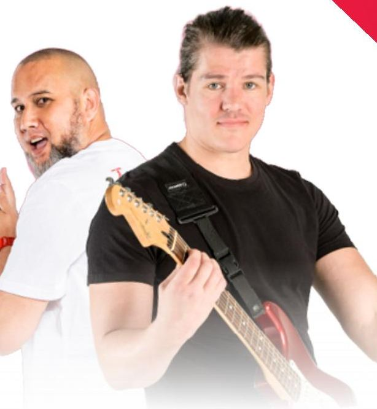

Radiowave 96.7
Papercuts
Mon–Fri · 06h45
Start the day in your customers’ ears. Papercuts digs up the unbelievable stories listeners may have missed, creating a warm, family-friendly moment during the school run and morning commute. Parents and children listen together, and your brand becomes part of a routine they look forward to.
As a sponsor you receive
- A pre-produced opening billboard naming your brand.
- A presenter mention of your brand during or at the end of the sponsored programme.
- One 30-second commercial aired within 30 minutes of the programme.